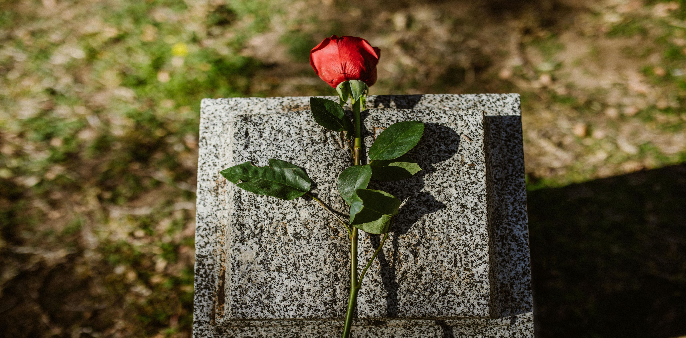

© Copyright 2025 • Θανάσης Τελετές
Περιοχές εξυπηρέτησης: Γλυφάδα, Βούλα, Κηφισιά, Ψυχικό, Αργυρούπολη,
Μαρούσι, Χαλάνδρι, Αγία Παρασκευή, Χολαργός, Γαλάτσι, Νέα Ιωνία, Νέα
Φιλαδέλφεια, Παγκράτι, Κολωνάκι, Πατήσια, Πετρούπολη αλλά και ολόκληρη
την Αθήνα.